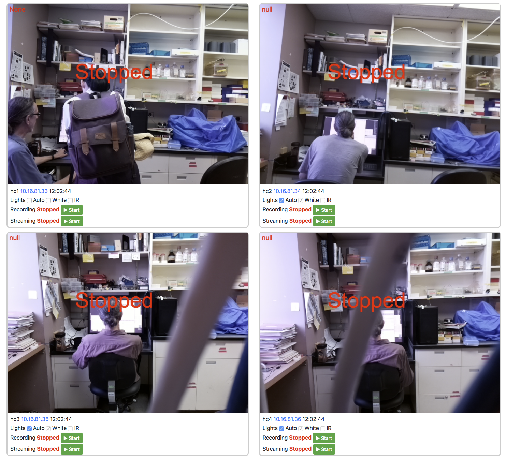
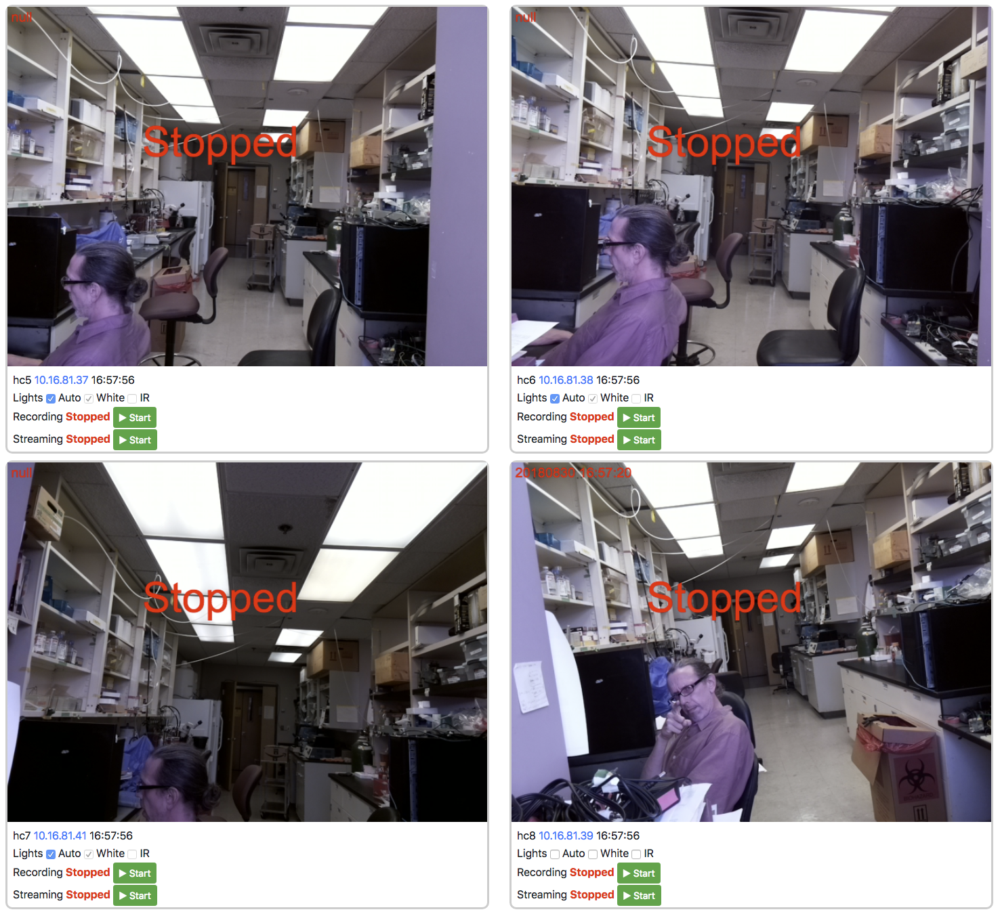

Commander
Commander is a web server to control any number of PiE servers running on different computers. The commander can be run on Linux, macOS, and Microsoft windows.
Requirements
Commander requires Python 3.7.2 or greater.
Install
macOS and Linux
# either download
git clone https://github.com/cudmore/pie
# or if you do not have git
# browse to the PiE GitHub repository and manually download the .zip
# uncompress the .zip and continue
# install
cd ~/pie/commander
./install-commander
# run the commander
./commander run
Microsoft Windows
# either download
git clone https://github.com/cudmore/pie
# or if you do not have git
# browse to the PiE GitHub repository and manually download the .zip
# uncompress the .zip and continue
# make sure you are suing Python 3.7.2
python --version
# install
cd pie
cd commander_app
python -m pip install -r requirements.txt
# run the commander
python commander.py
Browse
Once installed and running and assuming there are no errors, the commander interface can be browsed at http://[IP]:8000 where [IP] is the IP address of your computer.
http://[IP]:8000
When running locally, use 'localhost' in place of [IP], like this
http://localhost:8000
Starting and stopping commander server (Linux only)
The commander server is designed to run in the background and can be controlled using the ~/pie/commander_app/commander command.
cd ~/pie/commander_app
./commander start - start the background commander server
./commander stop - stop the backgorund commander server
./commander restart - restart the background commander server
./commander status - get the status of the background commander server
./commander enable - start the background commander server at boot
./commander disable - do not start the background commander server at boot
====================
./commander run - run commander on command line
If you run into trouble with the commander, run it on the command line to see the output with ./commander run.
Web interface
Editing IP addresses
In the config section, turn on 'edit ip' checkbox. Enter a valid IP and hit enter. If the IP is for a running PiE server (no port number needed), the red (bad connection) will be replaced with the current status of the specified PiE server. See 'Server Swarm' below.
Warnings and errors
When a PiE server is connected, the corresponding row in 'Server Swarm' will be filled in and active. When there is a connection error, the first column will appear red and all other controls will be inactive.
When the drive space remaining goes below 5 GB, the 'File' column will be displayed in red. Currently, there is no interface to set this trip-point, 5 GB is hard-coded in the commander index.html. Feel free to change it yourself.
Server swarm
Here, the commander is controlling 8 PiE servers. Server 3 (hc3) is recording, server 7 has a connection error, and server 8 (hc8) is streaming. Click image to enlarge.
{kind=link}
Swarm status
The swarm status is a clearinghouse of information for each PiE server. This includes buttons to restart the PiE server and reboot the raspberry Pi. Click image to enlarge.
{kind=link}
Video wall
|  |
|  |
{kind=link}
{kind=link}
Commander sync
The commander sync will sychronize files from any number of PiE servers to the computer running the commander.
todo: ADD IMAGE
Advanced usage
When the commander is run it will create a 'commander_config' folder in your User folder. In this configuration folder is a configuration json file to control the commander.
Here, you can control the PiE servers in the commander (can also be set in the web interface). You can also control the destination folder for downloaded files by specifying 'localFolder'. Make sure 'localFolder' is a full path to a folder on your computer. Something like '/Users/cudmore/commander_data'. Finally, make sure the download folder actually exists!
Once this json configuration file is changed, restart the commander and reload the web-page with 'ctrl+r' for a full refresh. If you make errors in editing the json file, you will see them in the commander logs on the command prompt or in 'commander_config/commander.log'.
{
"localFolder": "",
"serverList": [
{
"ip": "192.168.1.4",
"password": "",
"username": ""
},
{
"ip": "192.168.1.15",
"password": "",
"username": ""
},
{
"ip": "192.168.1.3",
"password": "",
"username": ""
},
{
"ip": "10.16.81.33",
"password": "",
"username": ""
},
{
"ip": "10.16.81.34",
"password": "",
"username": ""
},
{
"ip": "10.16.81.35",
"password": "",
"username": ""
},
{
"ip": "10.16.81.36",
"password": "",
"username": ""
},
{
"ip": "10.16.81.37",
"password": "",
"username": ""
},
{
"ip": "10.16.81.38",
"password": "",
"username": ""
},
{
"ip": "10.16.81.39",
"password": "",
"username": ""
},
{
"ip": "10.16.81.41",
"password": "",
"username": ""
}
],
"sshTimeout": 2
}
Troubleshooting
Run the commander manually
./install-commander installs a python virtual env in ~/pie/commander_app/commander_env. The commander server needs to be run in this environment.
# activate virtual environment in commander_env
cd ~/pie/commander_app
source commander_env/bin/activate
# command prompt should now start with '(commander_env)'.
# run the commander server manually
python commander.py